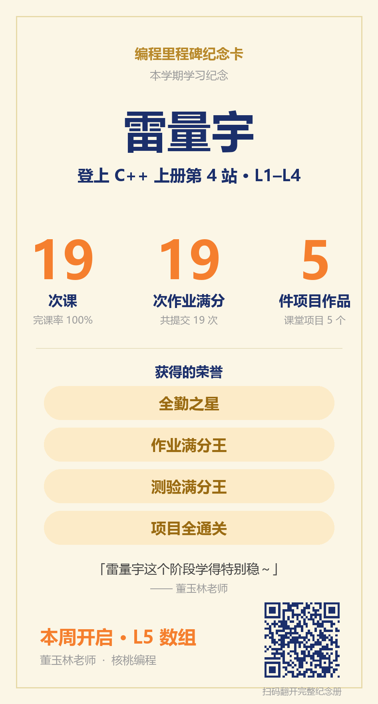

写下一行行指令，电脑就照着顺序执行、把结果显示出来
「如果……就……否则……」，程序会根据情况自己选择
一句循环，电脑就能做 100 遍也不嫌累——编程最神奇的地方
用数组一次存下很多数，再逐个处理，是通往算法的第一步
其中 19 份拿到满分，每一份都有老师批改反馈。
19 次随堂测验中，首次满分 16 次
在 L1–L4 的项目环节里，亲手把想法做成了能运行的作品。
连麦接通 9 次，班内互动第 11。
雷量宇这个阶段学得特别稳～19 次课一次没落下，这份坚持真的很难得。
19 次课后作业里有 19 次拿到满分、随堂测验首次满分 16 次、还亲手做完了 5 个课堂项目作品，每一步都有老师的批改和反馈👏
本周起开始学习 L5（数组 · OJ 解题），内容会更有挑战一些，卡住的地方我会盯着，差哪补哪。这条路我陪孩子一起走，有什么想法随时跟我说哈💪

长按图片保存 · 发给爷爷奶奶也看看
雷量宇，下一站见！ · 核桃编程